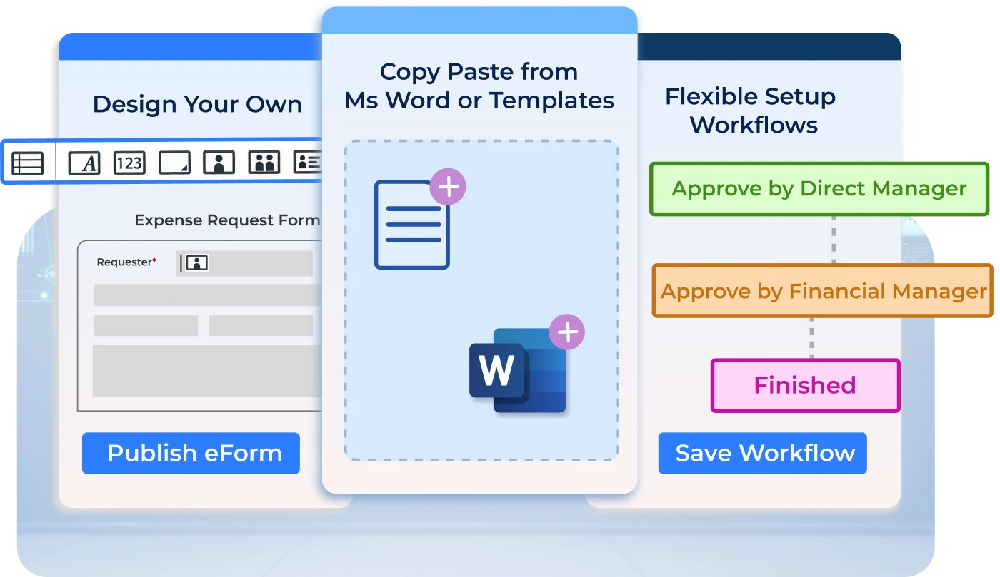

eForm Designer
- Perancang eForm Online: Buat eForm tanpa batas dengan cara yang Anda sukai: menggunakan kolom yang tersedia, menyalin dari MS Word, atau memakai templat siap pakai kami.
- Mesin Alur Kerja Fleksibel: Atur alur kerja secara fleksibel sesuai SOP perusahaan.